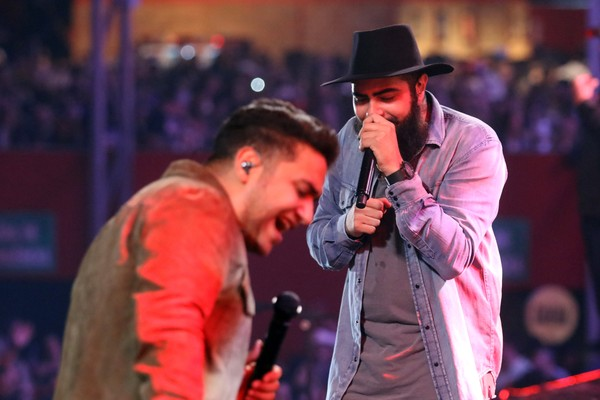

Quem somos?

Somos uma banda de sertanejo muito famoso que e composta por 2 vocalista,um baterista,2 violinista e so. nascemos no para e temos diversos hits pelo mundo e somos amado pelo brasil
Ricelly Henrique Tavares Reis, o "Henrique", e Edson Alves dos Reis Junior , o "Juliano" são irmãos, nascidos na cidade de Palmeirópolis, no Tocantins, filhos de Maria Tavares Reis e Edson Alves dos Reis, o grande incentivador no gosto dos dois filhos pela música sertaneja, foram Influenciados pelo sucesso da dupla João Paulo & Daniel, começaram a se apresentar nas rádios do município e para um grande público interpretando e dublando quando crianças, os sucessos da banda Mamonas Assassinas, sucesso em todo Brasil na década de 90, e a vida os obrigou a tomar um rumo diferente do que eles sempre sonharam, que foi viver da música.